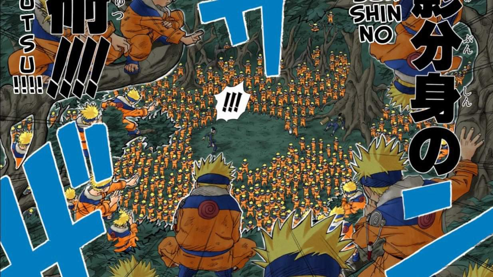
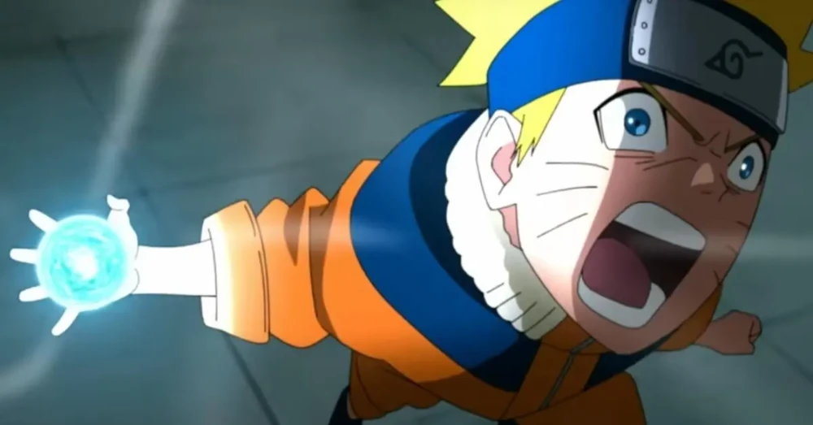
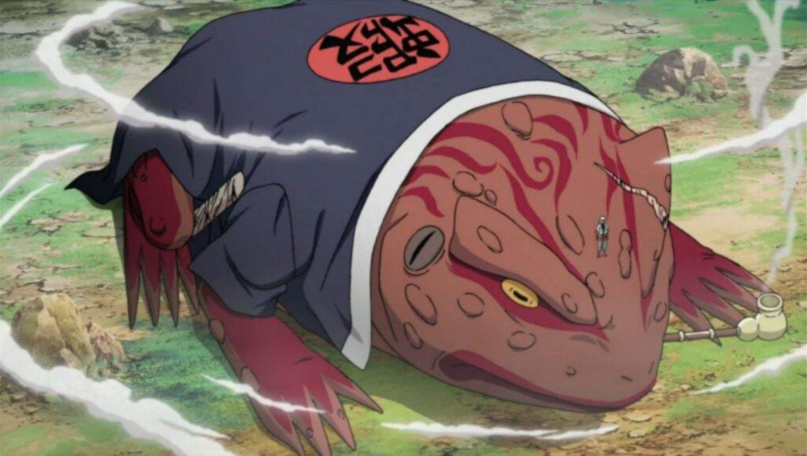
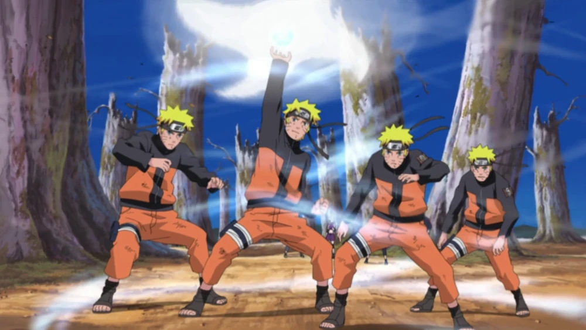
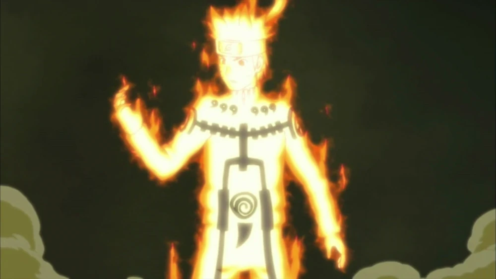
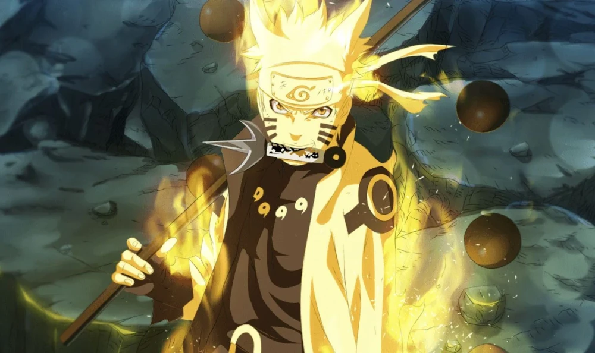
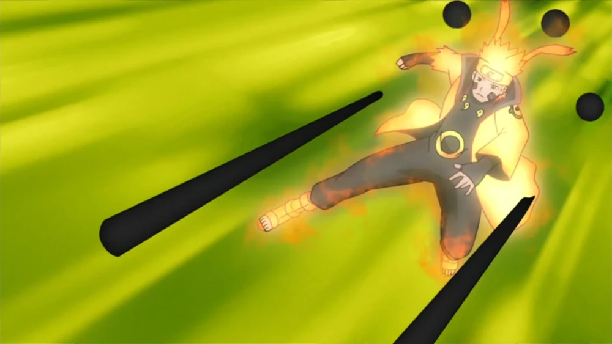

Jutsus do Naruto Clássico
Kage Bunshin no Jutsu
Kage Bunshin no Jutsu: Técnica dos Clones das Sombras, que permite Naruto criar cópias reais de si mesmo.
Rasengan
Rasengan: Uma esfera de chakra extremamente concentrada, ensinada por Jiraiya.
Kuchiyose no Jutsu
Kuchiyose no Jutsu: Técnica de Invocação que permite chamar os sapos do Monte Myoboku.
Jutsus de Naruto Shippuden
Rasenshuriken
Rasenshuriken: Uma evolução do Rasengan com lâminas de chakra cortantes.
Modo Sábio
Modo Sábio: Técnica que combina chakra natural para aumentar poder e reflexos.

Modo Kurama
Modo Kurama: Transformação que permite Naruto acessar totalmente o poder da Raposa de Nove Caudas.
Bijuu Dama
Bijuu Dama: Técnica suprema das Bestas com Caudas, uma esfera de puro chakra destrutivo.

Jutsus do Sábio dos Seis Caminhos
Modo Sábio dos Seis Caminhos
Modo Sábio dos Seis Caminhos: Naruto recebe os poderes de Hagoromo Ootsutsuki, permitindo acesso a todas as Bijuu.
Gudoudama
Gudoudama: Esferas negras de energia que anulam ninjutsus e são usadas por ninjas no nível dos Seis Caminhos.
Jutsus em Boruto
Modo Barion
Modo Barion: Poder final de Naruto, onde ele e Kurama combinam seu chakra para criar uma energia destrutiva única.